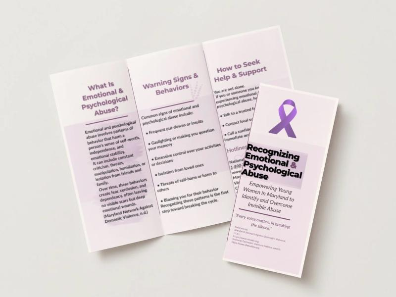
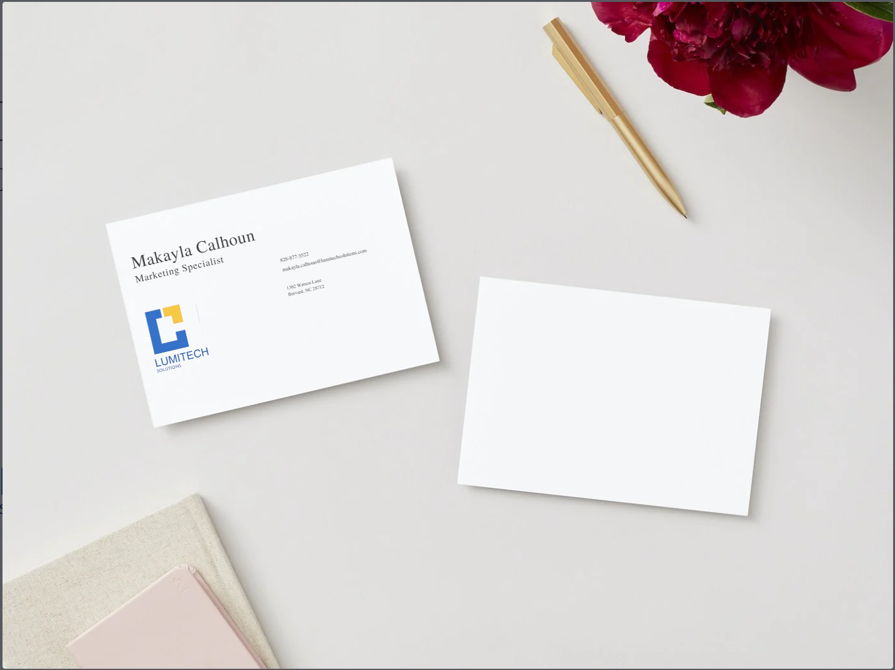
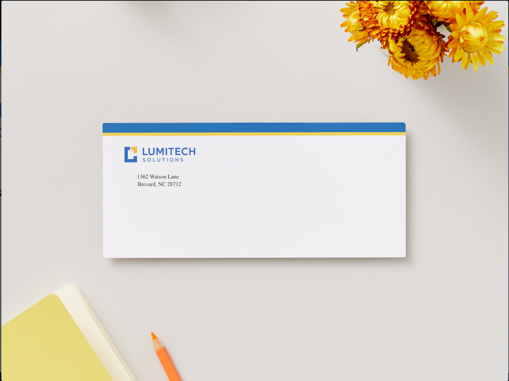
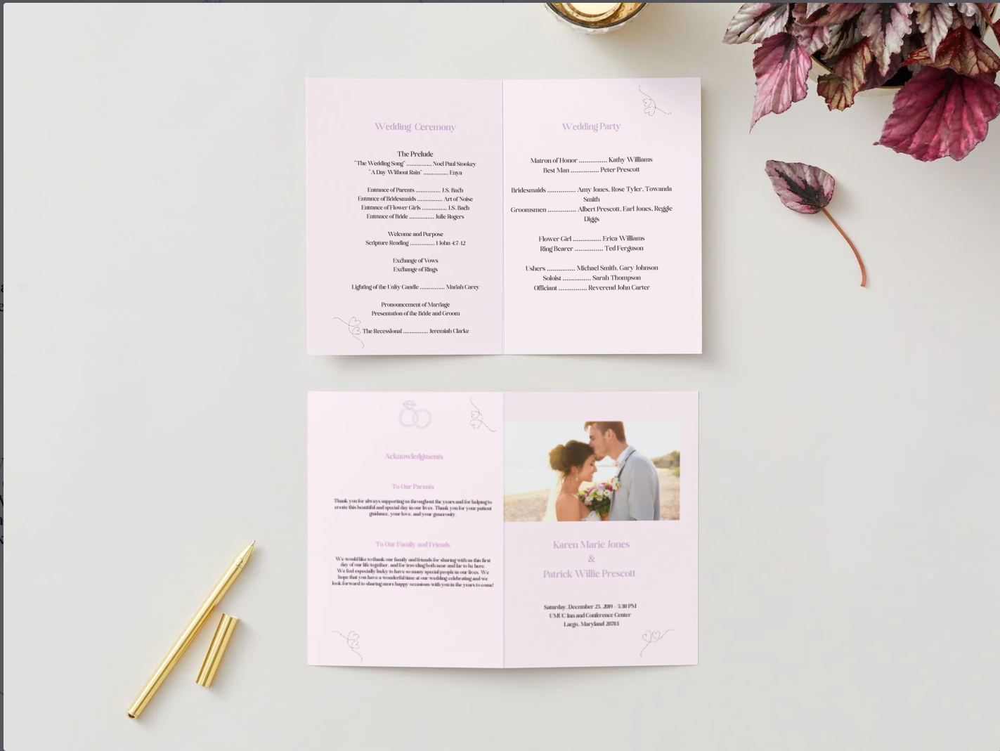
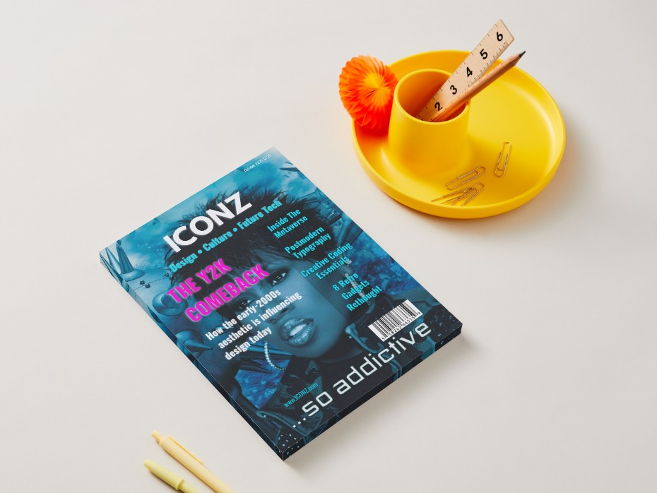
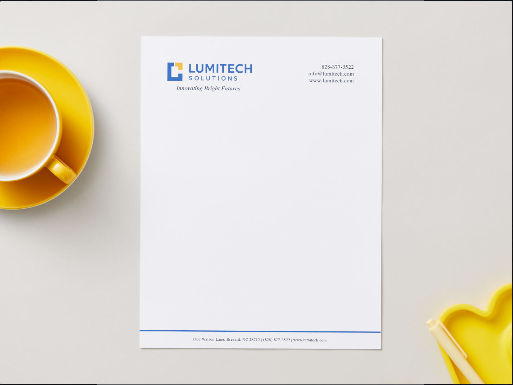

Projects
These projects demonstrate my ability to communicate information clearly, organize content, solve problems, and create professional materials using digital tools. While they were completed as part of my Digital Media & Web Technology program, the same attention to detail, organization, and communication carries into my work in healthcare operations.
Featured Project

Community Awareness Brochure
Designed a tri-fold brochure that presents complex information in a clear, organized format. Focused on readability, logical organization, and audience-centered communication while applying typography and layout principles.
Brand Identity Project
Created a coordinated branding package demonstrating consistency, organization, and attention to detail across multiple business documents.
Business Identity Package



Designed matching business materials using consistent typography, spacing, alignment, and branding standards to create a professional visual identity.
Additional Design Work

Layout & Communication
Designed with a focus on organization, readability, and professional presentation.

Typography & Layout
Applied typography, spacing, and layout principles to create a clean, easy-to-read visual presentation.
Looking Ahead
As I continue growing professionally, I plan to expand this portfolio with projects related to healthcare operations, process improvement, data analytics, and technology solutions that support patient care and organizational efficiency.